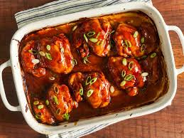

Baked Teriyaki Chicken

Teriyaki chicken is chicken coated in teriyaki sauce. The dish comes from the Japanese
cooking technique called teriyaki, where meat is grilled or broiled with soy sauce, mirin, and sugar glaze.
Today, teriyaki chicken refers to any chicken with teriyaki sauce - regardless of the cooking method.
What is Teriyaki Sauce?
Traditional teriyaki sauce is made up of four ingredients: soy sauce, mirin, ginger, and sugar.
But many chefs have their own takes on teriyaki sauce.
In this recipe, the teriyaki sauce includes soy sauce, sugar, ginger, cornstarch (for thickening),
cider vinegar (instead of mirin), water, garlic, and black pepper.
Ingredients
- ½ up of white sugar
- ½ cup of soy sauce
- ¼ cup of cider vinegar
- 1 tablespoon cornstarch
- 1 tablespoon of cold water
- 1 Clove garlic, minced
- ½ teaspoon of ground ginger
- ¼ teaspoon ground black pepper
- 12 boneless, skinless chicken thighs
Steps
-
Preheat the oven to 425 degrees F (220 degrees C).
Lightly grease a 9x13-inch baking dish.
-
Combine sugar, soy sauce, cider vinegar, cornstarch, cold water, garlic, ginger,
and pepper in a small saucepan over low heat.
-
Simmer, stirring frequently, until teriyaki sauce thickens and bubbles, 3 to 5 minutes.
Remove from the heat.
-
Place chicken thighs in the prepared baking dish. Brush both sides of each thigh with the sauce.
Reserve any extra sauce for basting.
-
Bake in the preheated oven for 30 minutes.
-
Flip chicken and brush with sauce. Continue to bake, basting with remaining sauce every 10 minutes,
until no longer pink and juices run clear, 20 to 30 more minutes.
-
Serve hot and enjoy!